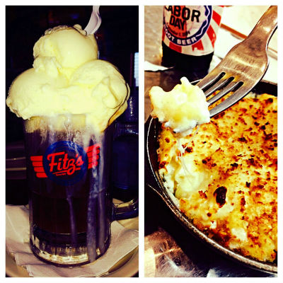
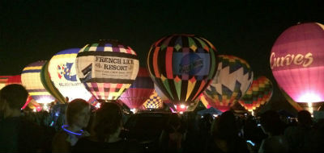
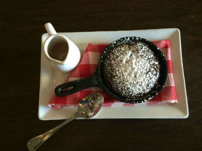
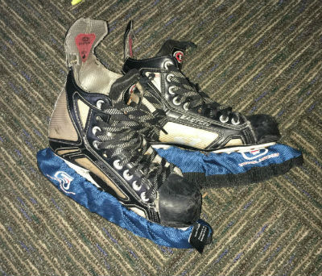

The Delmar Loop

Just North of WashU main campus, the Delmar Loop has so much to offer! Shopping, resturants, movie theatre, bars and live music, and a meeting of communities. Get into the local scene and still feel at home while visiting the loop.
Forest Park

A little farther away, but still extremely accessible, Forest Park has attractions for all ages, dining, and places to relax and watch nature.
Look specifically at attractions here.
Central West End

Enjoy a night on the town in the Central West End This town not only delivers on fun resturants and shopping, but shows some of St. Louis's history in its architecture. If you're looking for a great place to walk on a sunny day, this is the place to escape to.
St. Louis

St. Louis as a whole has so much to offer. If sporting events are fun for you, check out the St. Louis Blues for hockey and the St. Louis Cardinals for baseball.
Alternatively, St. Louis has tons of oppurtunities to volunteer. Click The City of St. Louis to learn morea bout the city. Or visit Volunteer St. Louis to find different ways to help out in St. Louis.